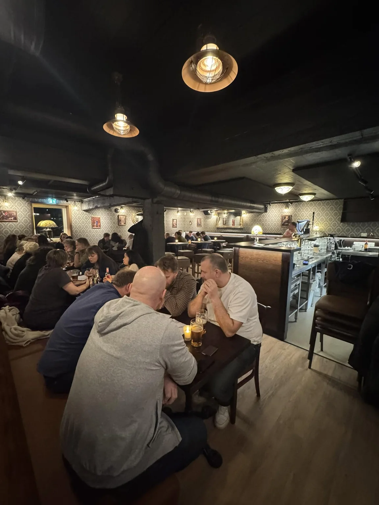

Hover and micro-interactions
CSS only, no libraries. Each one is tied to a component that already exists on the site. Hover, tab through with the keyboard, or press.

Gallery: lights come up. The photo brightens and pushes in slowly, like the room lights warming. It tells you the card is clickable without adding a badge.
Visit actions. A brass rule grows in from the edge and the arrow slides. You can tell which row you're about to tap.
VM-finale: Spania-Argentina
Kampvisning på storskjerm. Gratis inngang.
Sport 18julVM-bronsefinale: Frankrike-England
Kampvisning på storskjerm.
Sport 05febPubquiz
Månedlig torsdagsquiz med varierte temaer.
QuizProgram rows with a date block. On hover the date turns brass and the text shifts slightly right. This also fixes the dates wrapping onto three lines. Ordered newest first.
Filter: a state change you can see. The brass highlight slides to the chosen category instead of jumping there. That's the one place where motion shows what changed.
Throwaway design prototype, not production code. The site never imports it, and it adds no dependency. The shader is plain WebGL1, about 4 KB of script gzipped, with no libraries. It pauses when the hero leaves the screen or the tab is hidden, and the loop stops completely between motion windows. With reduced motion (real or simulated) it draws one still frame. Without WebGL you see the normal photo.